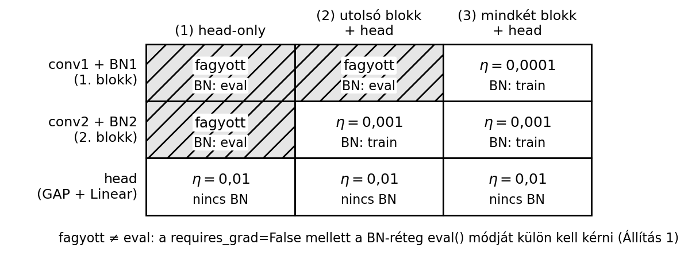

Ez az egység a 20.1. Feature extractor és új
fej feature extractor/head szétválasztását fejleszti tovább.
Feltételezzük, hogy egy előtanított (vagy legalábbis korábban tanított)
modell súlya rendelkezésre áll, és a backbone legalább egy részét a
fejjel együtt akarjuk az új feladathoz adaptálni. A cél az, hogy a
hallgató pontosan megkülönböztesse a paraméter-fagyasztást, az
optimizer-paramétercsoportokat, a rétegenként eltérő tanulási rátát és
az eval() módot, majd ezeket kontrollált helyi kísérletben
alkalmazza.
Induló kérdés: tegyük fel, hogy a fej tanulási rátája
,
a backbone utolsó blokkjáé pedig
.
Ha a backbone első blokkja továbbra is requires_grad=False,
akkor vajon a benne lévő BatchNorm réteg running statisztikái
változhatnak-e tanítás közben? (A válasz igen, ha a BatchNorm
train() módban van; eval() módban nem
változnak. Ezt az alábbi állításban bizonyítjuk.)
Definíció (fine-tuning). Legyen a modell
paramétereinek halmaza
,
ahol
a backbone (feature extractor) paramétereit,
a head paramétereit jelöli. Fine-tuningnak nevezzük azt az adaptációt,
amelyben legalább egy
-beli
paraméter aktív: requires_grad=True, szerepel az optimizer
valamely paramétercsoportjában, és a fejjel együtt frissül. Ha
minden eleme fagyasztott, akkor feature extractionről beszélünk (20.1. Feature extractor és új fej). A meghatározás
a súlyparaméterekre vonatkozik; a bufferek (például a BatchNorm running
statisztikái) állapota ettől független lehet, amint azt az alábbi
Állítás 1 mutatja.
Definíció (gradual unfreeze). Osszuk a modellt
blokkba: a backbone
blokkja
a mélység növekedésével, az
-edik
blokk pedig a head,
.
A fokozatos felengedés
fázisú ütemterv, ahol
(a head-only eset
-nak
felel meg): a
-edik
fázisban
()
az aktív halmaz
és minden
blokkra requires_grad=False. Minden fázis végén a rögzített
validációs metrikát kiértékeljük; a végső modellt csak az előre
rögzített validációs szabály alapján választjuk (például a
legalacsonyabb validációs loss-t elérő checkpointot tartjuk meg, és ezt
a szabályt a futás előtt rögzítjük).
Definíció (discriminative LR). Az aktív paraméterekhez blokkonként eltérő tanulási rátát rendelünk: , tipikusan ; itt egy teljes blokk paraméterhalmaza, nem egyetlen paraméter. Az optimizernek annyi paramétercsoportja van, ahány különböző értéket használunk (az azonos rátát kapó blokkok közös csoportba kerülhetnek); egy csoport a párt tárolja. SGD esetén a frissítés ahol a batch-átlagolt loss; Adam esetén a csoport-specifikus lépésnagyságot skálázza a 6.4. Momentum és adaptív optimizálók alfejezetben bevezetett módon. A gradiens alakja mindig megegyezik alakjával.
Az SGD és az Adam között itt lényeges különbség van. SGD-nél a lépés , ezért a tényleges elmozdulás a gradiens nagyságától is függ: a csoportok LR-aránya önmagában nem határozza meg a paraméterváltozás arányát. Adamnél a frissítés koordinátánként az irányba mutat (az első és második momentum becslése), és a lépés nagysága jó közelítéssel -vel skálázódik, a bias-korrekció és az módosításával; ezért a csoportok LR-aránya közelebb áll a tényleges relatív lépésnagyság arányához. Ez sem jelenti, hogy a paraméterváltozások aránya pontosan az LR-arány: a momentum- és másodikmomentum-becslés, az , a veszteség görbültsége és a rétegek csatolása is befolyásolja. A gyakorlati tanulság, hogy Adam alatt is validáción kell ellenőrizni az arányt, és a két optimizer LR-értékei nem cserélhetők át közvetlenül.
A discriminative LR heurisztika: az előtanított alsóbb rétegek általánosabb reprezentációt őriznek, ezért kisebb lépéssel védjük őket; a fej véletlenül inicializált, ezért nagyobb lépést igényel. Ez nem univerzális optimum, hanem keresési stratégiát szűkítő előfeltevés.
Az aktív halmaz, a blokkonkénti tanulási ráta és a BN-mód együttesét
az alábbi rács mutatja az F5 feladat három kezelési szintjén; a ráták az
F5 megoldásmintájából valók, a fagyott blokkok BN-rétegét a lenti
Állítás 1 miatt külön eval() módba tesszük.

A levezetési kötelezettségünk a következő állítás.
Állítás 1 (paraméter-fagyasztás ≠ eval mód). Legyen
egy PyTorch BatchNorm2d modul
track_running_stats=True beállítással és
momentummal. (A momentum=None eset ettől eltér: ott a futó
átlag kumulatív,
súlyú frissítéssel készül; az alábbi érvelés szerkezete ott is áll, csak
helyére
lép.) Tegyük fel, hogy mind
,
mind
esetén requires_grad=False. Ekkor:
Bizonyítás. A train módú forward képlete a PyTorch
dokumentációja [D12] szerint
majd a fenti momentumos frissítés végrehajtódik, ha
track_running_stats=True. A
requires_grad=False csak azt tiltja, hogy a hátrafelé
menetben
és
gradiensek létrejöjjenek; a running statisztika frissítése nem
gradiens-művelet, hanem a modul training flagjéhez kötött
állapotváltozás. Eval módban a dokumentált útvonal a running
statisztikákat használja, és nem végez frissítést. Ezzel az állítás
mindkét pontja következik. ∎
A gyakorlati különbséget táblázatban foglaljuk össze:
| Beállítás | Súlygradiens | Súlyfrissítés | BN running frissítés |
|---|---|---|---|
requires_grad=False, train() |
nincs | nincs | van |
requires_grad=False, eval() |
nincs | nincs | nincs |
requires_grad=True, train() |
van | van, ha optimizerben szerepel | van |
Tekintsük a kétdimenziós modellt: a fej egyetlen súlya, a backbone egyetlen súlya. Legyen a batch-átlagolt loss kezdeti érték , . A gradiens: A kezdeti hibatag , tehát , .
Head-only: , fagyasztott. Frissítés: Az új hibatag , az új loss (kezdeti ).
Partial unfreeze, discriminative LR: , . Frissítés: Az új hibatag , az új loss .
A részleges felengedés itt nagyobb loss-csökkenést ad, de ez csak ez a kétdimenziós kvadratikus példa; általános fölényt nem állítunk.
Minimális ellenőrző kód:
import torch
# head-only
w_h = torch.tensor([0.5], requires_grad=True)
w_b = torch.tensor([1.0], requires_grad=False)
loss = (w_h + 2*w_b - 1)**2
loss.backward()
print(w_h.grad, w_b.grad) # tensor([3.]) None
opt = torch.optim.SGD([w_h], lr=0.1)
opt.step()
print(w_h, w_b) # tensor([0.2000], requires_grad=True) tensor([1.])
# partial unfreeze, külön paramétercsoport
w_h = torch.tensor([0.5], requires_grad=True)
w_b = torch.tensor([1.0], requires_grad=True)
loss = (w_h + 2*w_b - 1)**2
loss.backward()
opt = torch.optim.SGD([
{"params": [w_h], "lr": 0.1},
{"params": [w_b], "lr": 0.01},
])
opt.step()
print(w_h, w_b) # tensor([0.2000], requires_grad=True) tensor([0.9400], requires_grad=True)Előfeltétel. Python 3.12 és a cnn-labor
csomag rögzített környezete (uv sync: NumPy 2.3.5, PyTorch
2.14.1+cpu; a közölt kimenetek a könyv ellenőrző környezetéből, NumPy
2.5.4 és PyTorch 2.15.0+cpu alatt készültek), CPU; a labor a szakasz
kódját használja, a szükséges csomagokat a laborcsomag rögzített
környezete biztosítja. Bemenet a GlyphLab
lab/data/images.npy, labels.npy és
metadata.csv fájlja; a finetune_compare.py a
projekt gyökeréből python lab/finetune_compare.py, a
lab/ könyvtárból python finetune_compare.py
paranccsal futtatható.
Protokoll. Kérdés: a GlyphLab-CNN-en azonos
epochszám mellett a head-only vagy az utolsó konvolúciós blokkot kis
rátával felengedő változat ad-e nagyobb validációs accuracy-t? Adat: a
függelék A. A GlyphLab adatkészlet szakaszában
leírt GlyphLab-szerződés szerinti data/ könyvtár, train
240/val 60/test 60 kép; a teszt nem választ modellt. Modell: a 20.1. Feature extractor és új fej
MiniCNN-jéhez hasonló, de kisebb CNN (maxpool helyett
stride-os konvolúciók, GAP-os fej; a két hálónak nincs közös
checkpointja): conv1(1→8, 3×3, stride 2, padding 1) + BN + ReLU,
conv2(8→16, 3×3, stride 2, padding 1) + BN + ReLU, GAP, Linear(16→3). A
head a GAP + Linear; a partial változat a conv2–BN2 blokkot engedi fel.
Előtanítás: a backbone-t előbb egy forrásfeladaton tanítjuk (csak a 0.
és az 1. osztály, kétosztályos fejjel, 10 epoch), és mindkét változat
ezt a source_backbone.pt állapotot tölti be új,
háromosztályos fejjel; a harmadik osztály így a backbone számára új.
Baseline: head-only. Változó tényező: a backbone utolsó blokkjának
aktiválása és LR-je. Metrika: validációs accuracy; mellékesen train
loss. Rögzített recept: Adam, batch 32, 10 epoch, float32 CPU,
seedkészlet
(mindkét változatra ugyanaz); a változatokat seedenként párosítva
hasonlítjuk össze, a döntési szabály a páros különbségek átlaga és
95%-os bootstrap konfidenciaintervalluma (23.3.
Páros összehasonlítás és csoportszintű intervallum).
A kód a lab/finetune_compare.py fájlban van; az adatot a
script melletti data/ könyvtárból olvassa, ezért a projekt
gyökeréből (python lab/finetune_compare.py) és a
lab/ könyvtárból (python finetune_compare.py)
is futtatható.
import csv
from pathlib import Path
import numpy as np
import torch
import torch.nn as nn
from torch.utils.data import DataLoader, TensorDataset
SEED = 20261020
BASE = Path(__file__).resolve().parent # lab/
DATA = BASE / "data"
device = torch.device("cpu")
dtype = torch.float32
# GlyphLab betöltés
X = np.load(DATA / "images.npy").astype(np.float32) # (360,1,24,24)
y = np.load(DATA / "labels.npy").astype(np.int64) # (360,)
with open(DATA / "metadata.csv", newline="", encoding="utf-8") as f:
rows = list(csv.DictReader(f))
# A sorrendre nem támaszkodunk: a saját index oszlopa adja a tömbindexet.
if not rows or "index" not in rows[0]:
raise ValueError("a metadata.csv-ből hiányzik az index oszlop")
if not (len(rows) == len(X) == len(y)):
raise ValueError("a metadata.csv és a tömbök hossza eltér")
idx = np.array([int(r["index"]) for r in rows], dtype=np.int64)
if not np.array_equal(np.sort(idx), np.arange(len(X))):
raise ValueError("a metadata.csv index oszlopa nem permutációja a tömbindexeknek")
split = np.array([r["split"] for r in rows])
X = torch.from_numpy(X).to(device)
y = torch.from_numpy(y).to(device)
train_idx = idx[split == "train"]
val_idx = idx[split == "val"]
assert (len(train_idx), len(val_idx)) == (240, 60)
BATCH = 32
def train_order(epoch):
# Külön generátor: a sorrend nem függ a globális RNG állapotától, ezért
# mindkét változat ugyanazt a batch-sorrendet kapja.
g = torch.Generator().manual_seed(SEED + epoch)
return torch.randperm(len(train_idx), generator=g)
val_loader = DataLoader(TensorDataset(X[val_idx], y[val_idx]),
batch_size=64, shuffle=False)
class GlyphLabCNN(nn.Module):
def __init__(self):
super().__init__()
self.backbone = nn.Sequential(
nn.Conv2d(1, 8, 3, stride=2, padding=1),
nn.BatchNorm2d(8),
nn.ReLU(),
nn.Conv2d(8, 16, 3, stride=2, padding=1),
nn.BatchNorm2d(16),
nn.ReLU(),
)
self.head = nn.Sequential(
nn.AdaptiveAvgPool2d(1),
nn.Flatten(),
nn.Linear(16, 3),
)
def forward(self, x):
return self.head(self.backbone(x))
def set_frozen_layerwise(model, backbone_slice, head_trainable):
# backbone_slice=None: egyetlen backbone-paraméter sem aktív (head-only).
for p in model.parameters():
p.requires_grad = False
if backbone_slice is not None:
for p in backbone_slice.parameters():
p.requires_grad = True
for p in model.head.parameters():
p.requires_grad = head_trainable
def evaluate(model, loader):
model.eval()
correct = total = 0
with torch.no_grad():
for xb, yb in loader:
logits = model(xb)
correct += (logits.argmax(1) == yb).sum().item()
total += yb.size(0)
acc = correct / total
assert 0.0 <= acc <= 1.0
return acc
def pretrain_source(epochs=10):
# Forrásfeladat: csak a 0. és 1. osztály (két osztályos fej), keveréssel.
# A finomhangolás célfeladata a három osztály: a harmadik osztály új a
# backbone számára, ezért a head-only nem a forrás triviális másolata.
torch.manual_seed(SEED)
model = GlyphLabCNN().to(device).to(dtype)
model.head[2] = nn.Linear(16, 2)
src = train_idx[(y[train_idx] < 2).numpy()]
opt = torch.optim.Adam(model.parameters(), lr=0.01)
loss_fn = nn.CrossEntropyLoss()
for epoch in range(epochs):
model.train()
g = torch.Generator().manual_seed(SEED + 100 + epoch)
order = torch.randperm(len(src), generator=g)
for start in range(0, len(order), BATCH):
bidx = src[order[start:start + BATCH].numpy()]
opt.zero_grad()
loss_fn(model(X[bidx]), y[bidx]).backward()
opt.step()
torch.save(model.backbone.state_dict(), BASE / "source_backbone.pt")
return model.backbone.state_dict()
SOURCE = pretrain_source()
init_sig = None
ref_order = None
def run_variant(partial):
# Minden változat ugyanazt az előtanított backbone-t és ugyanazt az új,
# seedelt fejet kapja; a batch-sorrend is azonos.
global init_sig, ref_order
torch.manual_seed(SEED)
model = GlyphLabCNN().to(device).to(dtype)
model.backbone.load_state_dict(
torch.load(BASE / "source_backbone.pt", weights_only=True))
sig = float(model.backbone[0].weight.detach().double().sum())
if init_sig is None:
init_sig = sig
assert sig == init_sig, "a két változat inicializálása eltér"
order0 = train_order(0)
if ref_order is None:
ref_order = order0.clone()
assert torch.equal(order0, ref_order), "a két változat batch-sorrendje eltér"
if partial:
# utolsó backbone blokk: index 3-tól (conv2, BN2, ReLU)
set_frozen_layerwise(model, model.backbone[3:], True)
opt = torch.optim.Adam([
{"params": model.head.parameters(), "lr": 0.01},
{"params": model.backbone[3:].parameters(), "lr": 0.001},
])
else:
set_frozen_layerwise(model, None, True)
opt = torch.optim.Adam(model.head.parameters(), lr=0.01)
loss_fn = nn.CrossEntropyLoss()
train_losses = []
for epoch in range(10):
model.train()
if partial:
model.backbone[:3].eval() # a befagyasztott conv1, BN1 eval marad
else:
model.backbone.eval() # a head train, a backbone eval marad
order = train_order(epoch)
epoch_loss = 0.0
for start in range(0, len(order), BATCH):
bidx = order[start:start + BATCH]
xb, yb = X[train_idx[bidx]], y[train_idx[bidx]]
opt.zero_grad()
loss = loss_fn(model(xb), yb)
loss.backward()
opt.step()
epoch_loss += loss.item() * xb.size(0)
train_losses.append(epoch_loss / len(train_idx))
val_acc = evaluate(model, val_loader)
return train_losses[-1], val_acc
head_loss, head_acc = run_variant(partial=False)
part_loss, part_acc = run_variant(partial=True)
print(f"head-only: train_loss={head_loss:.3f}, val_acc={head_acc:.3f}")
print(f"partial: train_loss={part_loss:.3f}, val_acc={part_acc:.3f}")A kimenet ezen a környezeten mért érték: Python 3.12, NumPy 2.3.5,
torch 2.14.1, CPU float32, OMP_NUM_THREADS=1, a protokoll
seedkészletének első eleme, seed 20261020 (a másik két seedet ez a kód
nem futtatja). A kód a split méretét, a két változat azonos
inicializálását és batch-sorrendjét, valamint az accuracy
értéktartományát assert-tel ellenőrzi; a hallgató a fenti
paranccsal saját környezetében reprodukálhatja:
head-only: train_loss=0.471, val_acc=0.917
partial: train_loss=0.329, val_acc=0.900Az előtanított backbone-on már a befagyasztott jellemzőkre tanított fej is messze a véletlen szint () fölött teljesít: a forrásfeladaton tanult szűrők a harmadik osztályt is elválasztják. (Véletlen inicializálású, befagyasztott backbone-nal a head-only ugyanebben a receptben a véletlen szinten marad; ezért kell a fejcsere előtt tanított állapot.) A partial változat a train lossot tovább csökkenti, a validáción viszont nem jobb. A fenti kód egyetlen seeddel fut, ezért a kimenet mechanizmus-szemléltetés: a két változat közti különbség nem választható el a minibatch-zajtól. A 60 képes validációs halmazon egyetlen kép százalékpont, ezért egy-két képnyi eltérés önmagában nem bizonyíték. Értelmezhető összehasonlításhoz legalább három seed szükséges, a protokollban megadott seedkészlettel és páros kiértékeléssel; a három seedes futást ez a fejezet nem tartalmazza.
F1 (fogalmi, nehézség 1). Magyarázza el a
különbséget a következő három fogalom között: (a)
requires_grad=False; (b) a paraméter kihagyása az optimizer
paramétercsoportjaiból; (c) model.eval() mód. Adjon
mindháromra egy-egy mondatos példát, és mutasson egy olyan helyzetet,
ahol (a) teljesül, de a fagyasztott modul állapota mégis változik.
F2 (levezetési, nehézség 1). Legyen , kezdeti , , , . Számítsa ki a gradienseket, majd a frissített paramétereket és a loss értékét (i) head-only, (ii) partial unfreeze esetén. Ellenőrizze, hogy a partial eset loss-a kisebb-e a head-only eseténél.
F3 (implementációs, nehézség 2). Írjon futtatható
PyTorch kódot, amely igazolja az Állítás 1-et: egy
BatchNorm2d(4) modul
paramétereire állítsa be a requires_grad=False értéket,
majd train módban hajtson végre egy forwardot, és ellenőrizze, hogy a
running_mean megváltozott; ezután eval módban ismételje
meg, és ellenőrizze, hogy ott nem változott. Adja meg a seedet, a
bemeneti alakot és a várt kimenetet.
F4 (hibakeresési, nehézség 2). Az alábbi head-only tanítási vázlat hibás:
def train_head_only_bad(model, loader, epochs):
model.train() # hiba itt
for p in model.backbone.parameters():
p.requires_grad = False
for p in model.head.parameters():
p.requires_grad = True
opt = torch.optim.Adam(model.head.parameters(), lr=0.01)
...Lokalizálja a hibát, magyarázza el a következményét a BN running statisztikákra és a későbbi eval pontosságra, majd adja meg a javítást és egy ellenőrzési lépést.
F5 (kísérlettervezési/transzfer, nehézség 3). Tervezzen kontrollált kísérletet a GlyphLab-CNN-en a fokozatos felengedés hatásának mérésére három kezelési szinttel: (1) head-only, (2) utolsó blokk + head, (3) mindkét blokk + head. Adja meg a kérdést, a baseline-t, a metrikákat, a split- és seed-kezelést, a validációs kiválasztási szabályt, és a következtetés legalább két konkrét korlátját. Nem kell kódot írnia, de a protokollnak lektorálhatónak kell lennie. A beadandó terv kötelező elemei: hipotézis, a változó tényező, kontroll (baseline), metrika és megfigyelési egység, a seedek száma és konkrét értékei, számszerű döntési szabály, valamint erőforráskeret.
F1 megoldás. (a) A requires_grad=False
azt tiltja, hogy az autograd a paraméterhez gradienst tároljon; ezáltal
az optimizer sem tudja frissíteni. (b) Ha a paraméter
requires_grad=True, de nincs benne egyetlen optimizer
paramétercsoportban sem, akkor a gradiens kiszámolódhat, de a frissítés
elmarad; ez ritkán kívánatos, mert felesleges számítást okoz. (c) Az
eval() mód a training-specifikus viselkedéseket kapcsolja
ki: a BatchNorm a running statisztikákat használja, nem frissíti azokat,
és a dropout-rétegek (ha vannak a modellben) inaktívak. Az (a) melletti
állapotváltozásra példa a fenti Állítás 1: a fagyasztott BN train módban
frissíti a running statisztikáit.
F2 megoldás. A hibatag . A gradiensek: (i) Head-only: , . Új hibatag , loss . (ii) Partial: , . Új hibatag , loss . Tehát ebben a példában a partial frissítés rontott; ez mutatja, hogy a felengedés nem garantál monoton javulást, és a heurisztikát empirikusan kell ellenőrizni. A romlás mechanizmusa az, hogy mindkét lépés túllő az minimumon (a hibatag előjelet vált: , illetve ), és a partial lépés nagyobb mértékben lő túl, ezért lesz 1,6 a head-only 1,5-tel szemben.
F3 megoldás.
import torch
import torch.nn as nn
torch.manual_seed(0)
bn = nn.BatchNorm2d(4)
bn.weight.requires_grad_(False)
bn.bias.requires_grad_(False)
bn.train()
before = bn.running_mean.clone()
bn(torch.randn(2, 4, 3, 3))
changed_train = not torch.equal(before, bn.running_mean)
print("train mód, változott:", changed_train)
assert changed_train
bn.eval()
before = bn.running_mean.clone()
bn(torch.randn(2, 4, 3, 3))
changed_eval = not torch.equal(before, bn.running_mean)
print("eval mód, változott:", changed_eval)
assert not changed_evalA kód futtatott kimenete (Python 3.12.3, torch 2.15.0+cpu, CPU,
seed=0): train mód, változott: True, majd
eval mód, változott: False. A momentum frissítés miatt
train módban a running statisztika csak akkor maradna változatlan, ha a
batch átlag éppen megegyezne a régivel; normál véletlen bemenetre a
változás majdnem biztosan bekövetkezik (a kivétel nulla valószínűségű
esemény, nem logikai szükségszerűség).
F4 megoldás. A hiba a model.train()
hívás: a befagyasztott backbone BN rétegei train módban maradnak, ezért
minden forward a fej tanításához használt mini-batchek átlagát és
varianciáját írja a running bufferbe, miközben a backbone konvolúciós
súlyai fagyottak. A running statisztika és a hozzá tartozó fagyott
súlyok így eltérő adateloszlást írnak le: eval módban a normalizálás a
legutóbbi mini-batchek statisztikáját használja, a konvolúciók viszont a
korábbi tanító eloszláson tanult reprezentációt adják. Ez inkonzisztens
reprezentációt és romló eval-pontosságot okozhat. A javítás:
def train_head_only_fixed(model, loader, epochs):
for p in model.backbone.parameters():
p.requires_grad = False
for p in model.head.parameters():
p.requires_grad = True
for epoch in range(epochs):
model.train()
model.backbone.eval() # minden epochban, a model.train() után
...Ellenőrzés: a tanítás előtt és után klónozzuk a
model.backbone[1].running_mean értéket, és igazoljuk, hogy
azonos maradt; a head paraméterei viszont változtak.
F5 megoldásminta. Kérdés: a fokozatos felengedés javítja-e a validációs accuracy-t a head-only baseline-hoz képest a GlyphLab-CNN-en? Adat: a GlyphLab train/val/test splitje; a test kizárólag a végleges, validációval kiválasztott modellre kerül, egyszer. Baseline: head-only, Adam, , 10 epoch. Három kezelési szint (nem időbeli fázis): (1) head-only (ez a baseline), (2) utolsó blokk + head, , , (3) mindkét blokk + head, , , . Mindegyik kezelést azonos 10 epochos költségvetéssel, ugyanazon a 3 seeden futtatjuk, ezért a kezelések seedenként párosíthatók; a kiválasztás a validációs accuracy seed-átlagán alapul, és a páros különbségek 95%-os bootstrap konfidenciaintervallumát is megadjuk (23.3. Páros összehasonlítás és csoportszintű intervallum). Metrika: validációs accuracy, valamint a train loss görbe a túlillesztés jelzésére. Mivel ugyanazt a validációs értéket használjuk kiválasztásra és jelentésre, ez a szám optimista: a maximum kiválasztása felfelé torzít (kiválasztási torzítás, adaptive overfitting); az elfogulatlan becslés a teszt egyszeri kiértékelése. Korlátok: a GlyphLab nem természetes kép, az eredmény nem általánosítható valódi domain shiftre; a 3 seed kevés a statisztikailag robusztus különbségtételhez, ezért a páros különbségek CI-je széles lesz, és az eredmény csak leíró jellegű; a teszt ismételt használata modellválasztásra tovább növeli a kiválasztási torzítást, ezért a tesztet csak egyszer, a végleges modellen értékeljük. A 8.2. Véges hipotézisosztály egyenletes korlátja finite-H korlátja a hipotézisosztály méretének hatását írja le az egyenletes konvergenciára; a modellválasztásra ez csak analógiaként vonatkozik, mert ott nem a hipotézisosztály, hanem a kiválasztási eljárás hozza be a torzítást.
Kötelező elemek kiegészítve. Döntési szabály (előre
rögzítve): a kezelt változatot csak akkor tekintjük jobbnak, ha az
elsődleges metrika seedenként párosított különbségének jelenetszintű
bootstrap 95%-os intervalluma
(,
np.random.default_rng(0)) teljesen a javulás oldalán van;
különben nem állítunk különbséget.
A leggyakoribb tévedés: „Ha requires_grad=False,
akkor a modul minden állapota befagyott.” Ez hamis. Az Állítás 1
bizonyítja, hogy a BatchNorm running_mean és
running_var bufferei train módban frissülnek akkor is, ha a
paraméterek nem tanulnak. A fenti F3 kód a konkrét ellenpéldát adja: a
running_mean megváltozik train módban, és nem változik eval
módban. Ezért a befagyasztott backbone-ot a head-only adaptáció során
explicit eval() módba kell tenni; a partial unfreeze esetén
pedig csak a felengedett blokkokat hagyjuk train módban.
Ellenőrizze: (1) minden fagyasztott BN eval módban van-e; (2) az optimizer paramétercsoportjai pontosan az aktív paramétereket tartalmazzák-e; (3) a validációs metrika nem választott-e tesztet; (4) ugyanaz a seed és dtype szerepel-e minden futásban; (5) a csoportok LR értékei a tervezett arányt követik-e. A tervezett arány a protokollban a futás előtt rögzített arány (például ), nem a futás közben kialakult érték.
Ismétlés: a 8.2. Véges hipotézisosztály egyenletes korlátja finite-H korlátja szerint a nagyobb keresési tér nagyobb statisztikai hibát okozhat; a partial unfreeze ezért nem automatikusan jobb, hanem validációval igazolandó kompromisszum. A 16.2. Pooling, downsampling és aliasing tanulsága, hogy a GAP előtti utolsó blokk a legkisebb térbeli felbontású (itt 6×6-os) reprezentációt állítja elő, és a blokkban nincs pooling: a 6×6-os méret a stride 2 konvolúcióból jön, a GAP pedig a blokk kimenetén, a fejen belül történik. Az adaptálás hatása ezért a legutolsó konvolúciós szintre korlátozódik; hogy ez nagyobb hatású-e a korábbi blokkok felengedésénél, csak mérés döntheti el, a priori nem állítható. A 19.2. MobileNet és inverted residual inverted residual blokkjában a blokkstruktúra adja a gradual unfreeze természetes határait: nem tetszőleges tenzort, hanem a blokk kimenetét engedjük fel.
A fine-tuning az előtanított backbone legalább egy részének és a
fejnek együttes adaptációja. A gradual unfreeze a blokkokat fokozatosan,
a discriminative LR pedig rétegenként eltérő tanulási rátával tanítja;
mindkettő heurisztika, validációval kontrollálandó. Bebizonyítottuk,
hogy a requires_grad=False nem egyenlő az eval móddal: a
fagyasztott BatchNorm train módban frissíti running statisztikáit. A
labor a GlyphLab-CNN-en hasonlítja össze a head-only és a részleges
felengedést rögzített seeddel; a közölt kimenet egyetlen seeddel mért
futás, nem statisztikai összehasonlítás. A feladatok a fogalmi
különbségeket, a kézi frissítést, a buffer-tesztet, a hibajavítást és a
kísérlettervet fedik le.
A következő egység 20.3. Preprocessing, domain shift és súlylicenc a valódi külső súlyok preprocessing-szerződését, a domain shift mérését és a súlylicenc kérdéseit tárgyalja; az itteni paramétercsoport- és buffer-ismeret ott válik szükségessé, amikor konkrét torchvision modellt illesztünk.